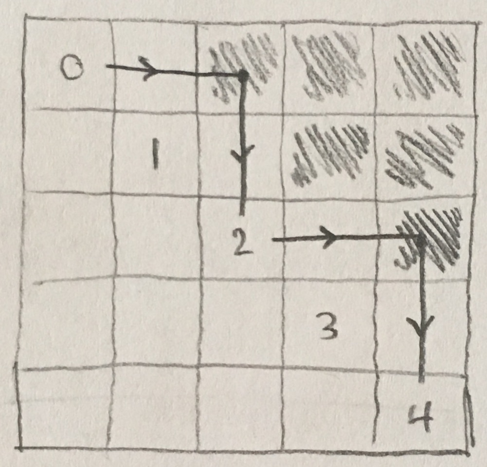
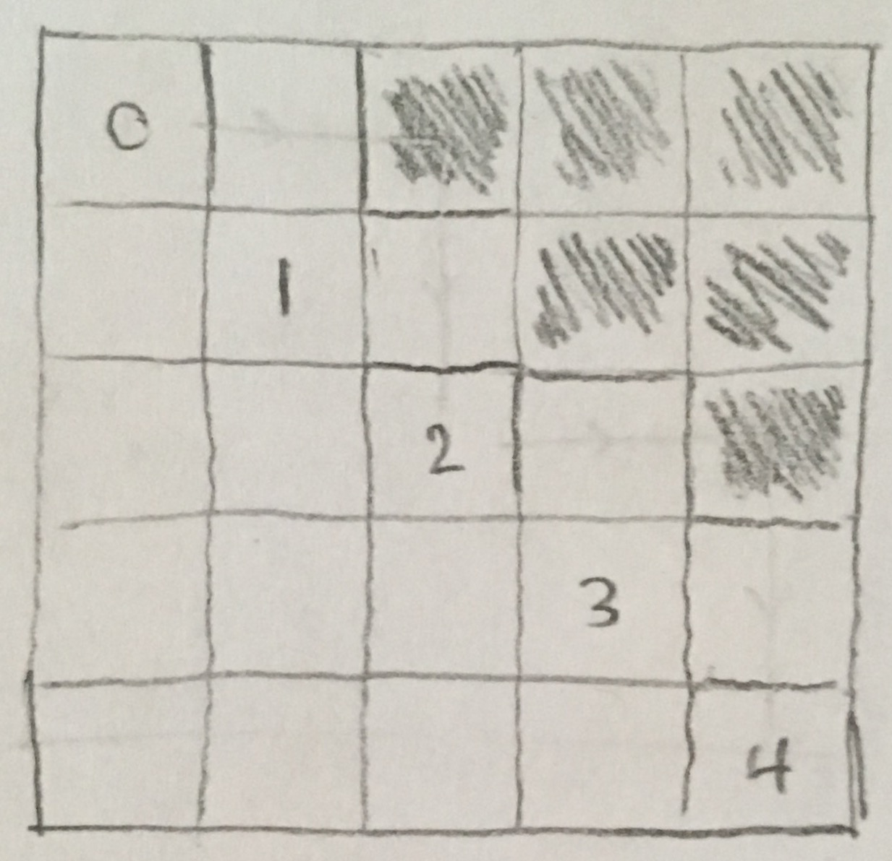
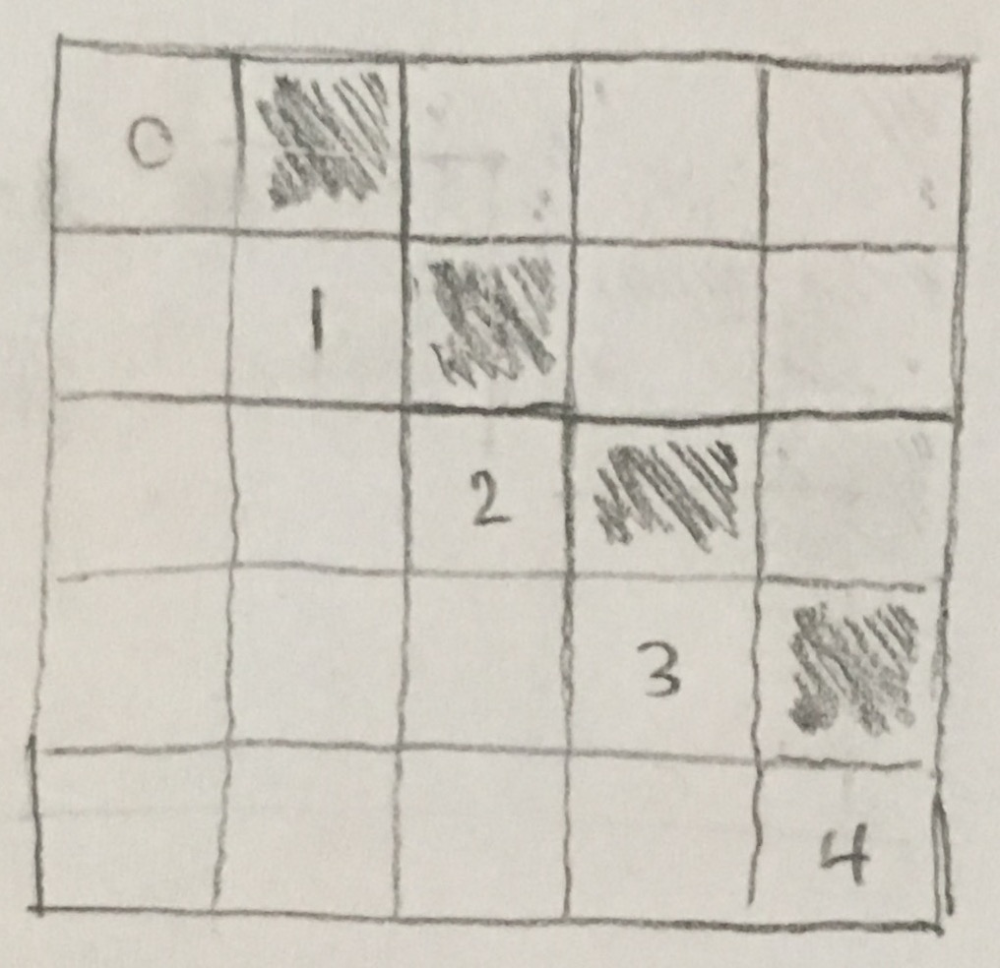
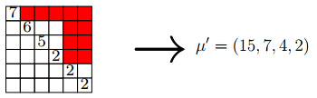
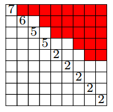
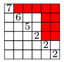
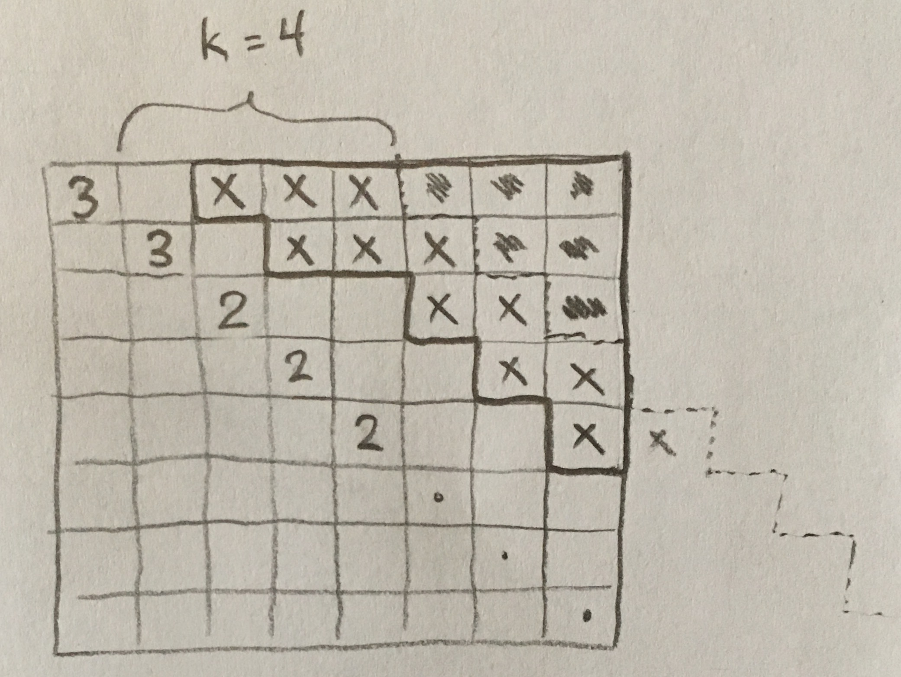
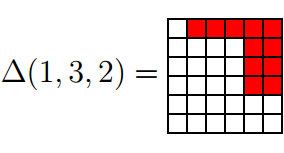
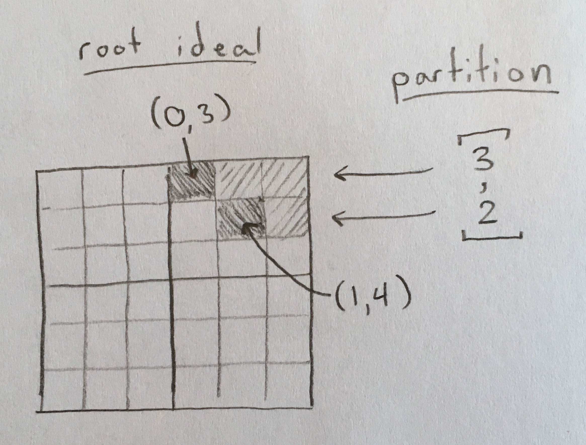

root ideal¶
Sage does not have a builtin ‘RootIdeal’ object. This module contains a RootIdeal class and useful functions pertaining to root ideals:
AUTHORS:
- Matthew Lancellotti (2018): Initial version
REFERENCES:
| [cat] | (1, 2, 3, 4, 5, 6) Catalan functions and k-schur positivity |
| [scat] | (1, 2, 3, 4, 5, 6) Skew-linked Catalan functions and k-schur positivity. Jonah Blasiak, Jennifer Morse, Anna Pun, and Daniel Summers. Not to be confused with ‘Catalan functions and k-schur positivity.’ |
-
class
root_ideal.RootIdeal(lis, n=None)[source]¶ A root ideal.
Consider the k-1 staircase partition \([k-1, k-2, \ldots, 1]\) positioned in the upper-right corner of a \(k\) x \(k\) grid. The cells in the grid are labeled with (row_index, col_index) 0-based coordinates. Now consider any right-justified subpartition of the staircase partition. This is a RootIdeal. However, it is expressed not as a partition but as a list of the cells it contains.
See Definition 2.1 of [cat] for more.
EXAMPLES:
The partition \([3, 1]\) in the 7 x 7 grid is the root ideal \([(0,4), (0,5), (0,6), (1,6)]\):
sage: ri = RootIdeal([(0,4), (0,5), (0,6), (1,6)])
-
bottom(root_ideal, start_index)[source]¶ Given a row index
start_index, look at it’sdown_path()and return the final index.EXAMPLES:
The picture below represents the root ideal used in the examples, and the path drawn on the picture depicts the down path for index 0 specifically, demonstrating that
bottom(0)should be 4:sage: ri = RootIdeals().init_from_partition([3, 2, 1], 5) sage: ri.bottom(0) 4 sage: ri.bottom(1) 3 sage: ri.bottom(2) 4 sage: ri.bottom(3) 3 sage: ri.bottom(4) 4
See also
-
complement()[source]¶ Return this root ideal’s complement in the upper-staircase-shape.
Given a root ideal (or just an iterable of roots), return it’s complement in the upper-staircase-shape, the result being a root ideal (or just an iterable of roots).
INPUTS:
ri– a root ideal
OPTIONAL INPUTS:
n– (defaultNone) the side length of the n x n box you want the complement to be taken over.
EXAMPLES:
The two root ideals depicted below are complements of each other:
 sage: ri1 = RootIdeal([(0,2), (0,3), (0,4), (1,3), (1,4), (2,4)]) sage: ri2 = RootIdeal([(0,1), (1,2), (2,3), (3,4)]) sage: ri1.complement() == ri2 True sage: ri2.complement() == ri1 True
See also
-
down(ri, row_index)[source]¶ Starting at the row corresponding to
row_index, return the down.Given a root ideal
riand a starting positionrow_index, move right on that row until you hit the root ideal (you are now standing ontop of a cell of the root ideal), then move straight down until you hit the diagonal, and return the new index.EXAMPLES:
The picture below represents the root ideal
ri:sage: ri = RootIdeals().init_from_partition([3, 2, 1], 5) sage: ri.down(0) 2 sage: ri.down(1) 3 sage: ri.down(2) 4 sage: ri.down(3) == None True sage: ri.down(4) == None True
See also
-
down_path(root_ideal, start_index)[source]¶ Given a starting row index
start_index, performdown()operations repeatedly until you can’t anymore.Returns the resulting sequence of indices as a list. (See [cat] Definition 5.2 for more)
EXAMPLES:
The picture below represents the root ideal used in the example, and the path drawn on the picture depicts the down path for
start_index0 specifically:sage: ri = RootIdeals().init_from_partition([3, 2, 1], 5) sage: ri.down_path(0) [0, 2, 4] sage: ri.down_path(1) [1, 3] sage: ri.down_path(2) [2, 4] sage: ri.down_path(3) [3] sage: ri.down_path(4) [4]
-
down_path_column_lengths(ptn)[source]¶ This is the column shape \(\mu'\) as defined by Definition 2.3 of [scat].
It is also introduced in the second paragraph of the overview as \(\mathfrak{cs}(\Psi, \lambda)\).
EXAMPLES:
In Example 2.4 of [scat], the following
depicts the root ideal in red and the partition on the diagonal:
sage: ri = RootIdeals().init_from_partition([5, 2, 2, 2], 6) sage: ptn = [7, 6, 5, 2, 2, 2] sage: ri.down_path_column_lengths(ptn) [15, 7, 4, 2]
This is also the lengths of the bounce paths in [cat] Definition 5.2.
See also
-
down_path_column_lengths_part(root_ideal, ptn, start_index)[source]¶ This is \(\mu_i\) in Definition 2.3 of [scat].
This exists mainly as a helper function for
down_path_column_lengths().EXAMPLES:
sage: ri = RootIdeals().init_from_partition([5, 2, 2, 2], 6) sage: ptn = [7, 6, 5, 2, 2, 2]
sage: ri.down_path_column_lengths_part(ptn, 0) 15 sage: ri.down_path_column_lengths_part(ptn, 1) 8 sage: ri.down_path_column_lengths_part(ptn, 3) 4 sage: ri.down_path_column_lengths_part(ptn, 2) 7 sage: ri.down_path_column_lengths_part(ptn, 4) 2 sage: ri.down_path_column_lengths_part(ptn, 5) 2 sage: ri.down_path_column_lengths_part(ptn, 6) Traceback (most recent call last): … IndexError: list index out of range
This is also the lengths of the bounce paths in [cat] Definition 5.2.
-
is_strict(ri)[source]¶ Return if this root ideal’s corresponding partition is strictly decreasing.
Given a root ideal
ri, check to see if it is a strict root ideal, as defined in Example 2.4 of [scat]. This merely means that it’s corresponding partition is strictly decreasing!EXAMPLES:
In the following images, ignore the index on the diagonal and look only at the root ideal in red.
sage: ri = RootIdeals().init_from_partition([8, 6, 5, 3, 2], 9) sage: ri.is_strict() True
sage: ri = RootIdeals().init_from_partition([5, 2, 2, 2], 6) sage: ri.is_strict() False
See also
-
next_within_bounds(min=[], max=None, type='strict')[source]¶ Get the next root ideal lexicographically that contains min and is contained in max.
This is the same method as
Partition.next_within_bounds(), but using the corresponding root ideals instead of partitions. It is best to understand that method before looking at this one.INPUTS:
self– The RootIdeal.min– (default[], the empty root ideal) The ‘minimum root ideal’ thatnext(self)must contain.max– (defaultNone) The ‘maximum root ideal’ thatnext(self)must be contained in. If set toNone, then there is no restriction.type– (default'strict') The type of root ideals allowed. For example, ‘strict’ for strictly decreasing root ideals, orNoneto allow any valid upper root ideal.
Note also that the default type is
'strict', whereasPartition.next_within_bounds()has default typeNone!EXAMPLES:
sage: m = [(0,3), (1,3)] sage: M = [(0,1), (0,2), (0,3), (1,1), (1,2), (1,3)] sage: RootIdeal([(0, 3), (1, 3)], n=4).next_within_bounds(min=m, max=M) [(0, 2), (0, 3), (1, 3)] sage: RootIdeal([(0, 2), (0, 3), (1, 3)], n=4).next_within_bounds(min=m, max=M) [(0, 1), (0, 2), (0, 3), (1, 3)] sage: RootIdeal([(0, 1), (0, 2), (0, 3), (1, 3)], n=4).next_within_bounds(min=m, max=M) [(0, 1), (0, 2), (0, 3), (1, 2), (1, 3)] sage: RootIdeal([(0, 1), (0, 2), (0, 3), (1, 2), (1, 3)], n=4).next_within_bounds(min=m, max=M) == None True
See also
Partition.next_within_bounds()
-
to_partition(root_ideal)[source]¶ Given a root ideal (list of cells), return the corresponding partition (the row shape of the root ideal).
Returns a
Partitionobject.EXAMPLES:
The red part of the following picture (please ignore the diagonal) represents the root ideal [(0, 1), (0, 2), (0, 3), (0, 4), (0, 5), (1, 4), (1, 5), (2, 4), (2, 5), (3, 4), (3, 5)].
But it can also be interpreted as the partition 5 2 2 2 (in the Hebrew convention). Therefore,
to_partition()acting on the root ideal will output 5 2 2 2:sage: ri = RootIdeal([(0, 1), (0, 2), (0, 3), (0, 4), (0, 5), (1, 4), (1, 5), (2, 4), (2, 5), (3, 4), (3, 5)]) sage: ri.to_partition() [5, 2, 2, 2]
See also
-
top(root_ideal, start_index)[source]¶ Given a column index
start_index, look at it’sup_path()and return the final index.EXAMPLES:
The picture below represents the root ideal
ri:sage: ri = RootIdeals().init_from_partition([3, 2, 1], 5) sage: ri.top(0) 0 sage: ri.top(1) 1 sage: ri.top(2) 0 sage: ri.top(3) 1 sage: ri.top(4) 0
See also
-
up(root_ideal, col_index)[source]¶ Starting at the column corresponding to
col_index, return the up.Same as
down(), but this time you start in the column indicated bycolumn_index, and move up until you hit the root ideal, then move left until you hit the diagonal.EXAMPLES:
The picture below represents the root ideal
ri:sage: ri = RootIdeals().init_from_partition([3, 2, 1], 5) sage: ri.up(0) == None True sage: ri.up(1) == None True sage: ri.up(2) 0 sage: ri.up(3) 1 sage: ri.up(4) 2
See also
-
up_path(root_ideal, start_index)[source]¶ Same as
down_path(), but uses a column index to start with, and applies up operations repeatedly.EXAMPLES:
The picture below represents the root ideal
ri:sage: ri = RootIdeals().init_from_partition([3, 2, 1], 5) sage: ri.up_path(0) [0] sage: ri.up_path(1) [1] sage: ri.up_path(2) [2, 0] sage: ri.up_path(3) [3, 1] sage: ri.up_path(4) [4, 2, 0]
See also
-
{kind=link}
{kind=link}
{kind=link}
-
class
root_ideal.RootIdeals[source]¶ The family of root ideals.
Use this class as a factory to initialize a
RootIdealobject with any valid identifying data. See theinit_from...methods below for ways to create a root ideal. Remember that you can also create a root ideal directly from an iterable of roots usingRootIdeal.-
init_all_from_skew_partition(sp, type='strict')[source]¶ Given a
SkewPartitionsp, find the corresponding set (but given as a list here) of root ideals.(This is the set \(\{\Psi \in \Delta^+(\mathfrak{R}) \mid \Phi(\lambda, \mu) \subset \Psi \subset \Phi^+(\lambda, \mu)\} = [(\lambda, \mu)]\) found in [scat] at the bottom of page 1.)
EXAMPLES:
sage: sp = SkewPartition([[4, 2, 1, 1], []]) sage: RootIdeals().init_all_from_skew_partition(sp) [[(0, 1), (0, 2), (0, 3), (1, 3)], [(0, 1), (0, 2), (0, 3), (1, 2), (1, 3)]]
See also
-
init_from_partition(ptn, n)[source]¶ Given a partition and the size of the square, return the corresponding root ideal. (This is the inverse function to
RootIdeal.to_partition()in the context of an \(n\) x \(n\) grid.)EXAMPLES:
The red part of the following picture (please ignore the diagonal) can be interpreted as the partition 5 2 2 2 (in the Hebrew convention):
Therefore the partition 5 2 2 2 with \(n=6\) corresponds to the root ideal [(0, 1), (0, 2), (0, 3), (0, 4), (0, 5), (1, 4), (1, 5), (2, 4), (2, 5), (3, 4), (3, 5)]:
sage: RootIdeals().init_from_partition([5, 2, 2, 2], 6) [(0, 1), (0, 2), (0, 3), (0, 4), (0, 5), (1, 4), (1, 5), (2, 4), (2, 5), (3, 4), (3, 5)]
-
init_from_removable_roots(corners, n)[source]¶ Given the removable roots
cornersof a root ideal and the size length \(n\) of the \(n\) x \(n\) grid, return the root ideal itself.EXAMPLES:
The root ideal [(0, 1), (0, 2), (0, 3), (0, 4), (0, 5), (1, 4), (1, 5), (2, 4), (2, 5), (3, 4), (3, 5)] in the \(6\) x \(6\) grid shown below in red (please ignore the diagonal) has removable roots \((0, 1)\) and \((3, 4)\):
sage: removable_roots_to_root_ideal({(0, 1), (3, 4)}, 6) [(0, 1), (0, 2), (0, 3), (0, 4), (0, 5), (1, 4), (1, 5), (2, 4), (2, 5), (3, 4), (3, 5)]
-
init_from_skew_partition(sp, type='max', algorithm='removable roots')[source]¶ Given a
SkewPartitionspand a type of root ideal (‘max’ or ‘min’), return the corresponding root ideal.A type of
'min'returns \(\Phi(\lambda, \mu)\) while a type of'max'returns \(\Phi^+(\lambda, \mu)\) as notated in [scat] at the bottom of page 1.EXAMPLES:
sage: RootIdeals().init_from_skew_partition(SkewPartition([[4, 2, 1, 1], [2, 1]]), type='min') [(0, 1), (0, 2), (0, 3), (1, 3)] sage: RootIdeals().init_from_skew_partition(SkewPartition([[4, 2, 1, 1], [2, 1]]), type='max') [(0, 1), (0, 2), (0, 3), (1, 2), (1, 3)] sage: sp = SkewPartition([[6, 5, 3, 2, 2, 1], [2, 2]]) sage: RootIdeals().init_from_skew_partition(sp) [(0, 3), (0, 4), (0, 5), (1, 4), (1, 5)]
See also
-
init_k_schur_from_pseudo_partition(seq, k, n=None)[source]¶ Given a
k-bounded “pseudo-partition”seq\(= \mu\) and the dimension \(n\) of the \(n\) x \(n\) grid, return the corresponding \(k\)-Schur root ideal \(\Delta^k(\mu)\), as defined in [cat] Definition 2.2 as\[\Delta^k(\mu) = \{(i,j) \in \Delta^+_n \mid k - \mu_i + i < j \}\]EXAMPLES:
The following diagram depicts the \(k\)-bounded partition on the diagonal and the resulting \(k\)-schur root ideal:
sage: k_ri = RootIdeals().init_k_schur_from_partition([3, 3, 2, 2, 2], 4, n=8) sage: k_ri.to_partition() [6, 5, 3, 2, 1]
See also
-
init_parabolic_from_composition(composition)[source]¶ Given a composition of positive integers, return the parabolic root ideal.
Given a composition \(\eta\) of positive integers, return the parabolic root ideal \(\Delta(\eta)\) defined by
\[\Delta(\eta) := \{ \alpha \in \Delta^+_{|\eta|} \:\text{above the block diagonal with block sizes}\: \eta_1, \ldots, \eta_r\}\]in [cat] just below Conjecture 3.3.
EXAMPLES:
sage: RootIdeals().init_parabolic_from_composition([1, 3, 2]) [(0,1), (0,2), (0,3), (0,4), (0,5), (1,4), (1,5), (2,4), (2,5), (3,4), (3,5)]
-
init_staircase(n)[source]¶ Given \(n\), return the root ideal commonly denoted \(\Delta^+\), which is the maximum possible root ideal in an \(n\) x \(n\) grid.
EXAMPLES:
sage: RootIdeals().init_staircase(3) [(0,1), (0,2), (1,2)] sage: RootIdeals().init_staircase(4) [(0,1), (0,2), (0,3), (1,2), (1,3), (2,3)]
See also
-
{kind=link}
{kind=link}
-
root_ideal.is_pseudo_partition(seq)[source]¶ Return whether
seqis a pseudo-partition.A __pseudo partition__ is a composition \(\gamma\) such that \(\gamma + \rho\) is a partition, where \(\rho\) is the staircase shape.
Another way to think of this function is that it will return
Falseif the “slope” ever exceeds \(+1\).EXAMPLES:
sage: is_pseudo_partition([5, 3, 1]) True sage: is_pseudo_partition([3, 2, 1]) True sage: is_pseudo_partition([2, 2, 2]) True sage: is_pseudo_partition([1, 2, 3]) True sage: is_pseudo_partition([1, 3, 5]) False
See also
-
root_ideal.removable_roots_to_partition(corners, n)[source]¶ Given the removable roots that define a root ideal, return the partition corresponding to that root ideal.
Given the
corners(removable roots) that define a root ideal as well as the sizenof the \(n\) x \(n\) root ideal grid, return the partition corresponding to that root ideal.EXAMPLES:
Consider that \(n = 6\) and the removable roots are \((0, 3)\) and \((1, 4)\). This function essentially draws a 6 x 6 grid, and then fills in the cells \((0, 3)\) and \((1, 4)\).
All cells to the north and east of the filled in ones also become shaded. This shades the root ideal [(0, 3), (0, 4), (0, 5), (1, 4), (1, 5)] which corresponds to the partition [3, 2], so the function will return
Partition([3, 2]):sage: removable_roots_to_partition([(0, 3), (1, 4)], 6) [3, 2]
See also
RootIdeals.init_from_removable_roots(),to_partition()
{kind=link}
-
root_ideal.selected_rows_to_maximum_root_ideal(n, selected_indices)[source]¶ Given the dimension of the square and the selected rows, output the root ideal.
Given the dimension
nof the square and the selected rows whose indices areselected_indices, return the maximum root ideal.EXAMPLES:
sage: selected_rows_to_maximum_root_ideal(1, [0]) RootIdeal([]) sage: selected_rows_to_maximum_root_ideal(2, [0, 1]) RootIdeal([]) sage: selected_rows_to_maximum_root_ideal(2, [0]) RootIdeal([(0, 1)]) sage: selected_rows_to_maximum_root_ideal(3, [0, 2]) RootIdeal([(0, 1), (0, 2)]) sage: selected_rows_to_maximum_root_ideal(4, [0, 2]) RootIdeal([(0, 1), (0, 2), (0, 3), (1, 3)]) sage: selected_rows_to_maximum_root_ideal(5, [0, 1, 4]) RootIdeal([(0, 2), (0, 3), (0, 4), (1, 3), (1, 4)]) sage: selected_rows_to_maximum_root_ideal(5, [0, 1]) RootIdeal([(0, 2), (0, 3), (0, 4), (1, 3), (1, 4), (2, 4)])
See also
-
root_ideal.skew_partition_to_removable_roots(sp, type='max')[source]¶ Given a SkewPartition
sp, return the removable roots of the corresponding ‘min’ or ‘max’ root ideal.INPUTS:
sp– aSkewPartition
OPTIONAL INPUTS:
type– (default'max') the type of root ideal you want to use.'min'is the minimum root ideal (as far as containment goes) and'max'is the maximum root ideal.
OUTPUT:
A list of removable roots in order.
TODO: find an example where min is different than max
EXAMPLES:
sage: SkewPartition([[], []]).to_removable_roots(type='min') [] sage: SkewPartition([[], []]).to_removable_roots(type='max') [] sage: SkewPartition([[3, 2, 1], [1]]).to_removable_roots(type='min') [(0, 2)] sage: SkewPartition([[3, 2, 1], [1]]).to_removable_roots(type='max') [(0, 2)] sage: SkewPartition([[6, 5, 3, 2, 2, 1], [2, 2]]).to_removable_roots(type='min') [(0, 3), (1, 4)] sage: SkewPartition([[6, 5, 3, 2, 2, 1], [2, 2]]).to_removable_roots(type='max') [(0, 3), (1, 4)]
-
root_ideal.skew_partition_to_selected_rows(sp)[source]¶ Given a skew partition
sp, follow the bounce algorithm and return the indices of the selected rows.EXAMPLES:
sage: SkewPartition([[], []]).to_selected_rows() [] sage: SkewPartition([[1], []]).to_selected_rows() [0] sage: SkewPartition([[3, 2, 1], [1]]).to_selected_rows() [0, 1] sage: SkewPartition([[6, 5, 3, 2, 2, 1], [2, 2]]).to_selected_rows() [0, 1, 2, 5]